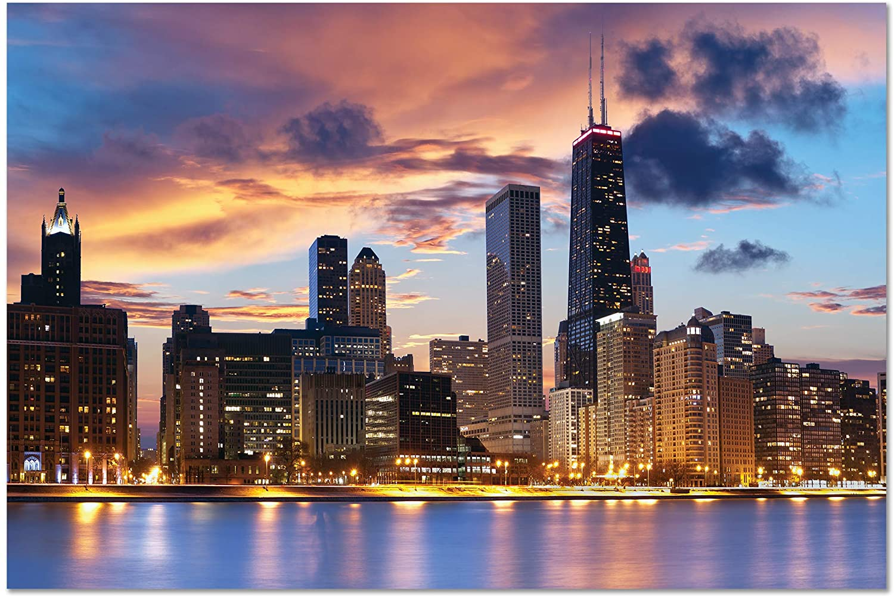
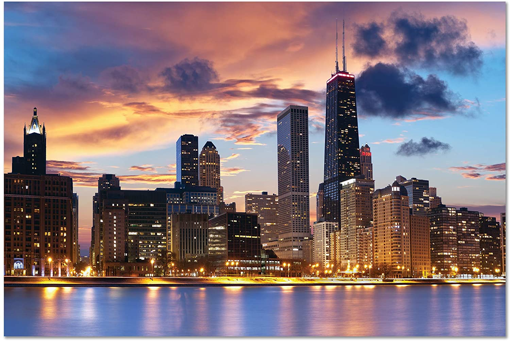

Explore the North Shore
Ready to explore the North Shore Suburbs of Chicago? Bordering the Lake of Michigan, these suurbs lie only a short drive from the city of Chicago. Rich with fine dining, site seeing, and activities to do, explore the many wonders this shorline has to offer.
 

As a local suburbian, I'm here to provide insider recommendations to experiencing the best of the north shore suburbs. As a foodie, beach enthusiast, and adventurer, I can provide insights to a traveler to the area on the best places to visit, things to see, and food to eat while in town.